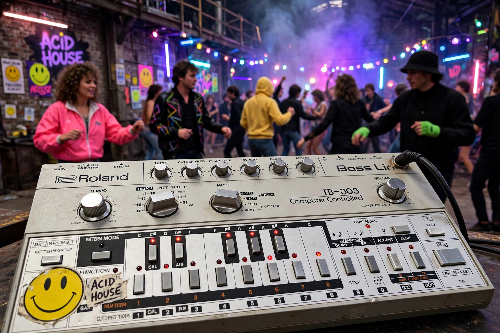

Acid house

| Stylistic origins | House music, Chicago house |
|---|---|
| Cultural origins | Mid-1980s, Chicago, US |
| Key instrument | Roland TB-303 |
Acid house is a subgenre of house music developed around the mid-1980s by DJs from Chicago. Its defining feature is the squelching, resonant bassline produced by the Roland TB-303 bass synthesiser, a machine originally marketed as a bass accompaniment for guitarists which Chicago producers repurposed by manipulating its filter resonance and accent controls in real time.
History
The genre is generally traced to Phuture's "Acid Tracks" (1987), produced by DJ Pierre, Spanky and Herb J, and released on Trax Records. The sound crossed to Britain, where it ignited the "Second Summer of Love" of 1988–89: acid house parties, warehouse raves and the smiley-face symbol became emblems of a youth culture that alarmed the British press and government, and ecstasy (MDMA) was closely associated with the scene.
Characteristics and legacy
Acid house tracks are typically built on a four-on-the-floor kick drum around 120 BPM, minimal loops, and the modulated 303 line as the lead element. The genre seeded acid techno, acid trance and big beat, and the TB-303 became one of the most imitated sounds in electronic music; periodic acid revivals continue in underground dance music.